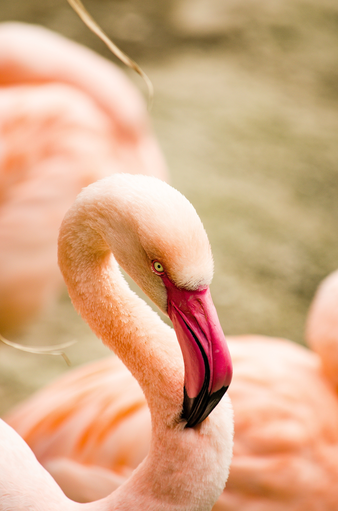

Os flamingos são aves aquáticas fascinantes, famosas por sua plumagem rosa e postura elegante. Eles filtram a água para se alimentar, alimentam seus filhotes com "leite" e equilibram-se em uma perna só para conservar o calor do corpo e poupar energia.
Por conta de suas pernas compridas, os flamingos não conseguem deitar ou sentar, portanto, acabam dormindo de pé. O mais curioso é que esses animais costumam adormecer em uma perna só, já que gasto de energia é muito menor nesta posição.
